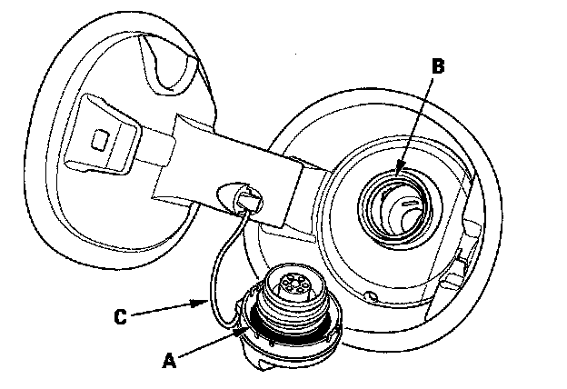
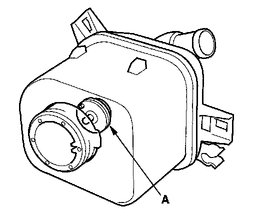

P0457
DTC P0457: EVAP System Leak Detected/Fuel Fill Cap Loose or MissingNOTE: Before you troubleshoot, record all freeze data and any on-board snapshot, and review the general troubleshooting information.
1. Check the fuel fill cap (the cap must say "TIGHTEN TO CLICK"). It should turn 1/4 turn after it's tight, then it clicks.
Is the correct fuel fill cap installed and properly tightened?
YES - Go to step 2.
NO - Replace or tighten the cap, then go to step 19.

2. Check the fuel fill cap seal (A) and the fuel fill pipe mating surface (B). Verify that the fuel fill cap tether cord (C) is not caught under the cap.
Is the fuel fill cap seal missing or damaged, is the fuel fill pipe damaged, or is the tether cord caught under the cap?
YES - Replace the fuel fill cap or the fuel fill pipe, then go to step 19.
NO - Go to step 3.
3. Turn the ignition switch ON (II).
4. Clear the DTC with the HDS.
5. Do the EVAP FUNCTION TEST in the INSPECTION MENU with the HDS.
Is the result OK?
YES - Intermittent failure, the system is OK at this time. Check for poor connections or loose terminals at the FTP sensor, the EVAP canister vent shut valve, and the PCM.
NO - Go to step 6.
6. Turn the ignition switch OFF.
7. Remove the EVAP canister vent shut valve from the EVAP canister.
8. Connect the 2P connector to the EVAP canister vent shut valve.
9. Turn the ignition switch ON (II).
10. Select EVAP CVS ON in the INSPECTION MENU with the HDS.

11. Check the EVAP canister vent shut valve (A) operation.
Does the valve operate?
YES - Check the routing of the EVAP canister vent tube, then go to step 18.
NO - Go to step 12.
12. Turn the ignition switch OFF.
13. Replace the EVAP canister vent shut valve.
14. Turn the ignition switch ON (II).
15. Reset the PCM with the HDS.
16. Do the PCM idle learn procedure.
17. Do the EVAP FUNCTION TEST in the INSPECTION MENU with the HDS.
Is the result OK?
YES - Go to step 23.
NO - Check for poor connections or loose terminals at the FTP sensor, the EVAP canister vent shut valve, and the PCM, then go to step 1.
18. Reinstall the EVAP canister vent shut valve.
19. Turn the ignition switch ON (II).
20. Reset the PCM with the HDS.
21. Do the PCM idle learn procedure.
22. Do the EVAP FUNCTION TEST in the INSPECTION MENU with the HDS.
Is the result OK?
YES - Gotostep23.
NO - Check for poor connections or loose terminals at the FTP sensor, the EVAP canister vent shut valve, and the PCM, then go to step 1.
23. Check for Temporary DTCs or DTCs with the HDS.
Is DTC P0457 indicated?
YES - Check for poor connections or loose terminals at the FTP sensor, the EVAP canister vent shut valve, and the PCM, then go to step 1.
NO - Troubleshooting is complete. If any other Temporary DTCs or DTCs are indicated, go to the indicated DTCs troubleshooting.